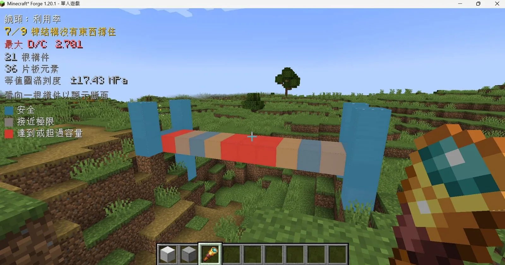

Real structural engineering, inside Minecraft
In vanilla Minecraft, gravity stops at sand and gravel. Block Reality reads what you build as a structural model and hands it to a real finite element engine — the same kind of solve an engineer runs on a building before it gets poured.
Every beam, column, slab and wall carries its own self-weight. Put a load on a member and you get back its demand-to-capacity ratio, the governing fibre, the stress profile through the section depth, and — separately, because it is a separate question — whether the thing is about to buckle.

How it works
Block Reality translates voxel geometry into a structural model behind the scenes:
- Voxel scale: one Minecraft block is one metre.
- 6-DOF nodes: every analytical node carries six degrees of freedom — three translations, three rotations — so axial force, shear, bending moment and torsion all transfer properly.
- Collinear runs: continuous blocks in a line are merged into one member rather than solved block by block — correct for strength, and much faster. It also means one element per run, which the buckling number is sensitive to; the scope section gives the measurement.
- MITC4 shells: slabs and walls are four-node Mixed Interpolation of Tensorial Components facets, chosen over a grillage because a grillage reports exactly zero for in-plane shear — the one load path a shear wall exists to carry.
- Buckling, reported separately: a linear buckling solve with geometric stiffness runs alongside the stress check. A slender column can sit at a comfortable D/C and still be past its critical load; folding the two into one number would hide that.
A 199-member model solves in about 50 ms on the reference laptop, and not on the tick thread — so that is the latency before the numbers appear, not time taken away from the game. Above 300 blocks the buckling solve is skipped by default and the HUD says so, because that solve grows as the cube of the model.
What it does, and what it does not
It is an analysis and visualisation tool. It tells you what the forces are and where the
structure is closest to failing. Blocks do not crack, deform or fall down — overload turns a member red and
pushes max D/C past 1, and an unsupported structure is reported as a mechanism rather than
collapsing. Progressive collapse is on the roadmap for 0.4, not in this build.
Implemented today: 6-DOF beams, MITC4 shells including floors and shear walls, linear buckling for both, per-member and per-shell demand-to-capacity, and surface stress contours you can walk around and read off both faces of a slab.
Not implemented, stated plainly: reinforced-concrete composite sections — the catalogue is solid rectangles and circles, and the tokens say so — per-plate buckling, and nonlinear post-buckling. The buckling factor is the linear onset.
How accurate that onset is depends on the mesh, which is worth knowing before you rely on it. A straight run is one element, so it carries one constant axial force. Where the real axial force is nearly constant that is excellent: a 19 m cantilever under a top load 400× its self weight lands within 0.5% of the Euler value. Where the axial force varies along the member it is not: the same column buckling under its own weight reports 3.14 where the exact answer is 9.89 — 68% low, so conservative — and climbs to 9.15 once nineteen elements exist. A one-newton test load at mid-height raises the reported factor by 68%, because it splits the run in two. Both figures come from scripts that ship in the repository and run against the engine you installed; earlier releases described this number as an upper bound on the real critical load, which is wrong for the self-weight case and has been withdrawn.
Every solve returns a global equilibrium residual, recomputed independently from geometry and density rather
than read back out of the assembled load vector — so it is a statement about the answer that does not depend
on the solver agreeing with itself. /br status prints it. The full verification record, every
benchmark against its closed form, lives in
evidence/VERIFICATION.md.
Project Hub & Links
Official releases, source code repositories, and documentation resources:
CurseForge Page
Official Forge mod release. Browse versions, changelogs, and install via CurseForge App or direct download.
Mod Repository
Source code for the Minecraft Forge mod and embedded finite element (FEA) sidecar solver engine.
Site Repository
Source code for this website, documentation assets, visual tools, and development logs.
Live Documentation
Online guide covering installation, block structural catalogue, utilisation lenses, and devlogs.
Latest Devlog
Read All Devlogs
Devlog #1: First Steps into Web Development
Devlog #1: First Steps into Web Development
Today marks my official start in programming. I kicked things off with the Mimo app to get a feel for basic syntax
Go to Devlog page for full screenshots →